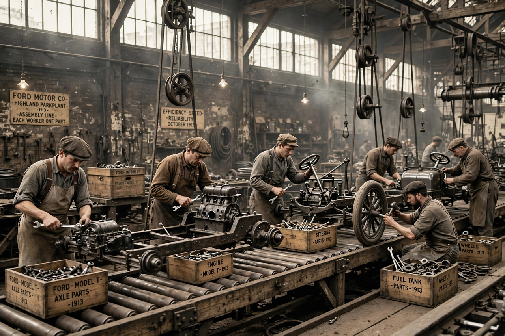

Assembly line

An assembly line is a manufacturing process in which parts are added to a product in a sequential manner, using planned logistics, to create a finished product much faster than with handcrafting methods. The product moves — typically on a conveyor — past a series of workstations, at each of which a worker or machine performs one specialised operation.
Historical development
The underlying principles — division of labour and interchangeable parts — developed over centuries. Venetian shipyards fitted out warships in sequence in the 16th century; Eli Whitney and others promoted interchangeable musket parts around 1800; and the meatpacking plants of Cincinnati and Chicago in the 19th century used overhead-trolley "disassembly lines" that inspired later designs.
Ford and the moving assembly line
The modern assembly line was perfected at the Ford Motor Company. In 1913, at the Highland Park plant in Michigan, Ford's engineers — drawing on ideas from William Klann and others who had studied slaughterhouse lines — introduced a continuously moving chassis line for the Model T. Assembly time for a chassis fell from over 12 hours to about 1 hour 33 minutes. Mass production cut the Model T's price dramatically, and in 1914 Ford introduced the five-dollar day, doubling wages to reduce turnover and create consumers for the cars.
Social and economic effects
Assembly lines made complex manufactured goods affordable at scale and defined the industrial economy of the 20th century. Critics noted the monotony and physical strain of repetitive work — famously caricatured in Charlie Chaplin's film Modern Times (1936). From the late 20th century, lines have been progressively automated with industrial robots, and lean production methods, pioneered by Toyota, reorganised lines around just-in-time flow and continuous improvement.
See also: James Watt.